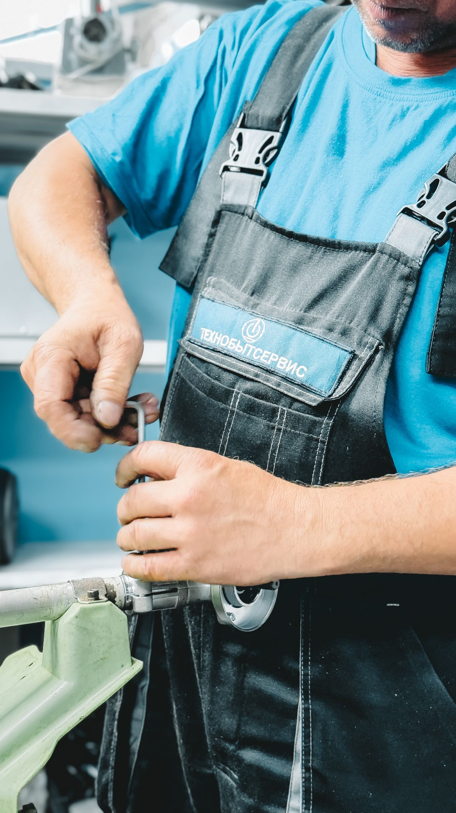
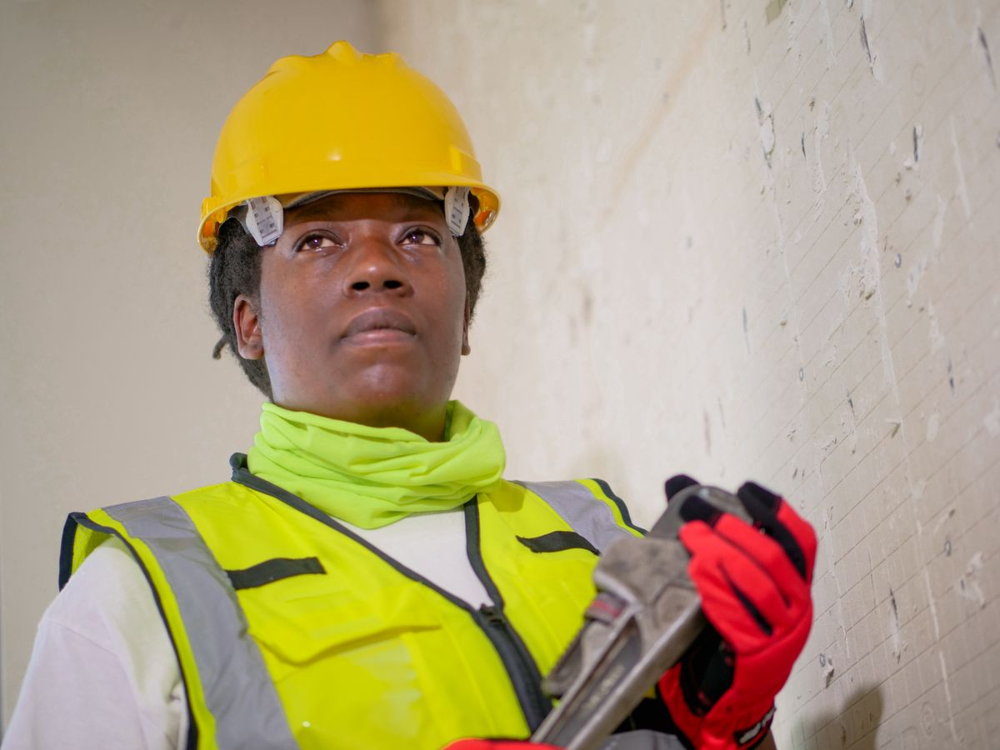
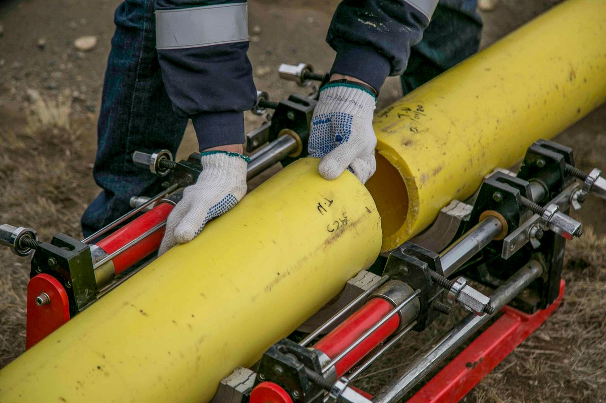

Sewer and Drain, Colorado Springs
Leo's Sewer & Drain Inc.
Drain and sewer plumbing in Colorado Springs since 1982, with 24-hour emergency service.

About
Leo's Sewer and Drain is a drain and sewer plumbing company on Delaware Drive in Colorado Springs. The company has served Colorado Springs since 1982, offering drain cleaning, hydro-jetting, video drain camera inspection, main sewer line clean-outs, sewer excavation, backflow installation and testing, and garbage disposal service.
Gallery


All gallery photos are stock photos, labeled as such. They show plumbing work and pipes, not this company's jobs.
Serving Colorado Springs since 1982
Leo's Sewer and Drain has served Colorado Springs since 1982. Emergency service runs 24 hours a day, 7 days a week, with no extra night or weekend charges. Call (719) 550-0837 or email service@leosdrains.com to ask about a job.
Drain and sewer services
Drain cleaning
Hydro-jetting
Video drain camera inspection
Main sewer line clean-outs
Sewer excavation
Backflow installation and testing
Garbage disposal service
Visit
Address: 315 Delaware Dr, Colorado Springs, CO 80909
Phone: (719) 550-0837
Email: service@leosdrains.com
Contact
Call (719) 550-0837 Email service@leosdrains.com
Leo's Sewer & Drain Inc. serves Colorado Springs, CO. Questions? Call (719) 550-0837.